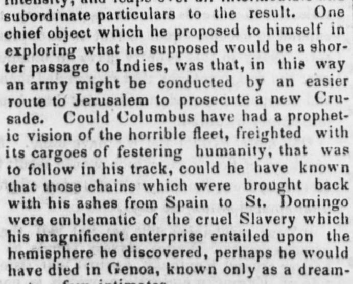
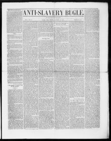

Domingo were emblematic of the cruel Slavery which his magnificent enterpriseDomingo eran emblemáticos de la cruel Esclavitud que su magnífica empresa
Anti-Slavery Bugle. New-Lisbon, Ohio, November 10, 1848. Page 1. View the originalVer el original


See the full pageVer la página completaBased on the provided excerpt, the newspaper reflects critically on Christopher Columbus, stating that the chains brought back with his ashes from Spain to St. Domingo were emblematic of the cruel slavery his enterprise entailed upon the hemisphere. It describes the indigenous people of Hispaniola as simple and happy islanders whom Columbus initially found and claimed could be converted through love rather than force, yet asserts that Columbus sowed the fatal seed from which a horrible system of slavery sprang. Additionally, the text addresses labor and subsistence questions regarding the state or republic, arguing that people, their wives, and their children ought to support themselves with their own hands rather than rely on the labor of Indians.Partiendo de las líneas extractadas, el periódico formula un juicio severo sobre Cristóbal Colón, aduciendo que las cadenas trasladadas con sus cenizas desde España a Santo Domingo simbolizaban la despiadada servidumbre que su empresa acarreó al continente. Retrata a los aborígenes de La Española como isleños sencillos y venturosos que Colón halló en un principio, aseverando que podían ganarse por el afecto y no por el rigor, aunque imputa a Colón el haber sembrado el germen funesto del cual brotó un atroz sistema de esclavitud. Asimismo, el texto ventila cuestiones de trabajo y subsistencia cívica, sosteniendo que los hombres, sus consortes e hijos deben procurarse el sustento con el propio esfuerzo de sus manos antes que depender del sudor indígena.
FULL TEXT:TEXTO COMPLETO:
The great Genoese, like other original discoverers, was a fanatic. His zealous faith, turned in whatever direction, has the same intensity, and leaps over all intermediate and subordinate particulars to the result. One chief object which he proposed to himself in exploring what he supposed would be a shorter passage to Indies, was that, in this way an army might be conducted by an easier route to Jerusalem to prosecute a new Crusade. Could Columbus have had a prophetic vision of the horrible fleet, freighted with its cargoes of festering humanity, that was to follow in his track, could he have known that those chains which were brought back with his ashes from Spain to St. Domingo were emblematic of the cruel Slavery which his magnificent enterprise entailed upon the hemisphere he discovered, perhaps he would have died in Genoa, known only as a dreamer to a few intimatesintensidad, y salta sobre todos los particulares intermedios y subordinados al resultado. Un objeto principal que él se propuso al explorar lo que suponía sería un pasaje más corto a las Indias, era que, de esta manera un ejército podría ser conducido por una ruta más fácil a Jerusalén para proseguir una nueva Cruzada. Si Colón hubiera podido tener una visión profética de la horrible flota, cargada con sus cargamentos de humanidad fétida, que había de seguir en su estela, si hubiera podido saber que aquellas cadenas que fueron traídas de vuelta con sus cenizas de España a Santo Domingo eran emblemáticas de la cruel Esclavitud que su magnífica empresa impuso sobre el hemisferio que descubrió, quizás habría muerto en Génova, conocido solo como un soña-